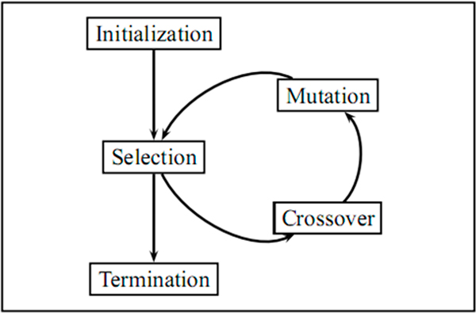
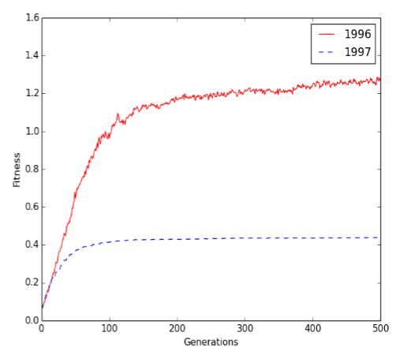

Ga
Traveling Salesperson Problem
- Deliver ECU T-shirts to 7 stores in Greenville.
- Brute force time complexity: N!, N is the number of vertices.
- Genetic Algorithm (GA)
- GA: Inspired by genetic evolution process:
- Chromosome (population)
- Crossover
- Mutation
- Survival of fittest
- Advantage: no need to know the best way to solve the problem, try different possible solutions until results converge
- Key evaluate solutions and generate different solutions
High Level GA

Figure 1 High Level GA and Chromosomal Mutations
- Materials Credit: https://www.youtube.com/watch?v=3GAfjE_ChRI
- Figure
- Chromosomal Mutations Figure

Figure 2 Chromosomal Mutations
- Crossover example: Sex-determination system Figure
- XY and XX
- Female XX; Male XY

Figure 3 Crossover example: Sex-determination system XY and XX Female XX; Male XY
- Natural Selection
- Chromosome includes information and rules can filter unfitted chromosomes.
- Figure

Figure 4 Figure Credit: https://www.ck12.org/biology/natural-selection/lesson/Natural-Selection-and-Populations-Advanced-BIO-ADV/
Traveling Salesperson Problem
- Let’s come back to the TSP problem.
- If we can encode a TSP solution (maybe not a good one) into a chromosome and define rules to filter unfitted chromosomes, we may generate better results.
GA Workflow
- Steps:

Traveling Salesperson Problem

Figure 5 Traveling Salesperson Problem
- How to define a path using Chromosome idea?
- Similarly, each TSP solution should contain all the vertices exact once (path not a circuit). Figure
Crossover: Method 1

Figure 6 Crossover: Method 1
- How to generate new chromosomes: Crossover and Mutation.
- Crossover 1: Select last N numbers from P2, and take them out from P1
- Each solution needs to include all the vertices based on TSP. Figure
Crossover: Method 2

Figure 7 Crossover: Method 2
- Crossover 2: Select last N numbers from P1, and take them out from P2 Figure
Mutation: Method 1

Figure 8 Mutation: Method 1
- Mutation 1: change order Figure
Mutation: Method 2

Figure 9 Mutation: Method 2
- Mutation 2: change position Figure
GA Workflow
- Board
When to stop?
- When your results converge.

GA limitations
- It is hard to implement a real time GA application.
- How to solve this issue?
- GA may not find out the global optimal solution.
- How to solve this issue?
SSOI and ISPeL survey
- ISPeL survey: https://uncg.qualtrics.com/jfe/form/SV_9TcU1F9z5DANPr7, Due Nov. 15
- SSOI available at Canvas.
| Index | Prev |